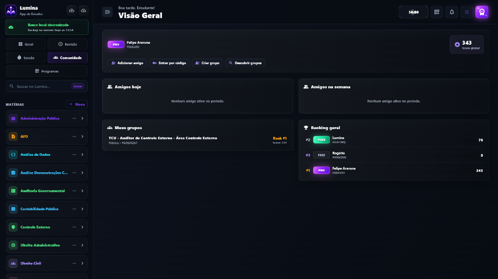
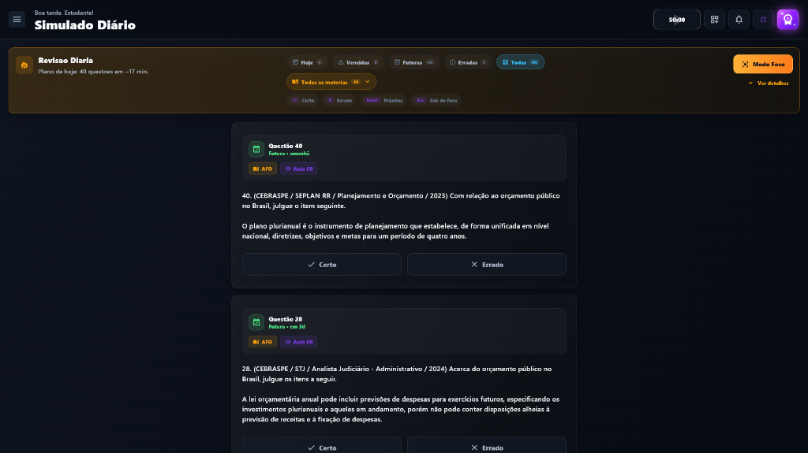

O Seu Novo Espaço de Estudos
O Lumina foi desenhado para unir foco profundo, organização intuitiva e uma experiência de aprendizado fluida. Explore as telas principais abaixo.
Dashboard & Pomodoro
O coração do Lumina. Uma visualização consolidada projetada para eliminar a procrastinação.
Ciclos de Foco Inteligentes
Timer Pomodoro integrado que avisa a hora de descansar e salva suas estatísticas.
Métricas Semanais
Gráficos elegantes medindo seus minutos focados e XP acumulado por matéria.

Esta área exibirá a foto real do seu dashboard geral assim que você salvá-la em assets/images/dashboard_geral.png.

Esta área exibirá a foto real da sua comunidade estudantil assim que você salvá-la em assets/images/community.png.
Comunidade & Conexão
Você nunca está estudando sozinho. Conecte-se com milhares de estudantes em todo o país.
Fóruns por Matéria
Tire dúvidas, colabore e comente em resoluções de questões complexas.
Compartilhamento de Questões
Importe ou distribua bancos de questões de revisão espaçada criados pela própria comunidade.
Revisões Espaçadas
O algoritmo inteligente do Lumina planeja automaticamente as revisões nos dias perfeitos para fixar a matéria na memória de longo prazo.
Questões de Fixação
A classificação do intervalo de revisão ocorre automaticamente ao acertar ou errar as questões, adaptando os prazos.
Calendário de Fixação
Gráficos que preveem sua curva de esquecimento e a quantidade de questões agendadas.

Esta área exibirá a foto real do seu painel de revisões assim que você salvá-la em assets/images/revision.png.
Pronto para elevar seu nível de estudos?
Instale o instalador oficial do Lumina beta e comece sua jornada com foco extremo.